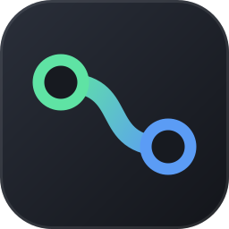
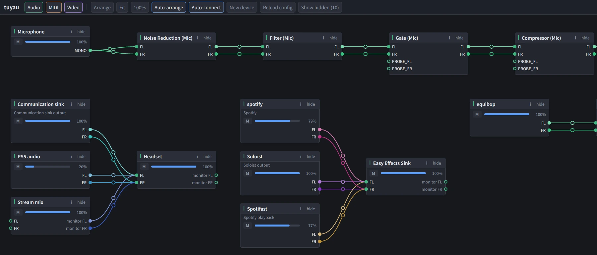
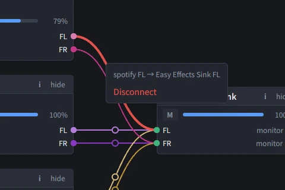
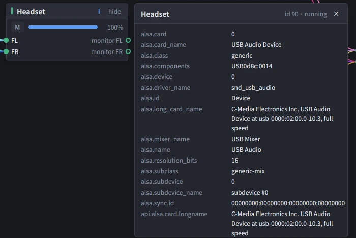
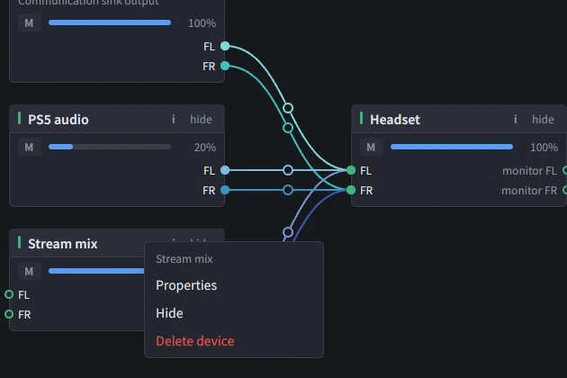
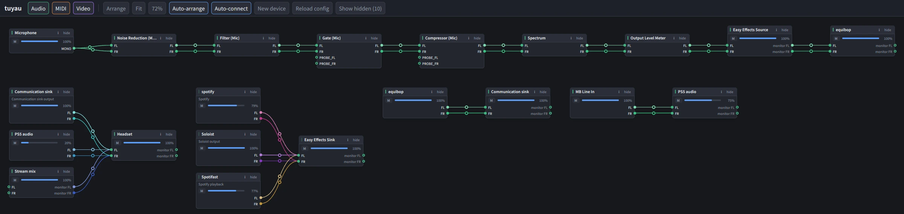

Declarative config
Links, renames, volumes and virtual devices live in a read-only TOML file. The GUI never writes to it, so it fits in Nix as is.

tuyau GitHubPipeWire patchbay · Rust · GPU-rendered
tuyau is a graph editor and a CLI for PipeWire that share one config.
Wire things by hand, and they stay wired: across app restarts, reboots and
nixos-rebuild.

Features
Links, renames, volumes and virtual devices live in a read-only TOML file. The GUI never writes to it, so it fits in Nix as is.
Declared links are recreated whenever their nodes appear, from the GUI or from tuyau watch running as a user service.
Nodes follow the signal flow, wire crossings are minimized and linked ports line up. Auto-arrange keeps it tidy as streams come and go.
A slider and a mute button on every card, the same from the CLI, and initial levels from the config when a node appears.
Create sinks and sources to group streams, give them their own volume, and route them to @default-sink@ so they follow your output.
Links, volumes, moves, renames, hides, devices, even a full re-arrange: Ctrl+Z takes it back.
tuyau ls, link, volume, mute, apply, watch. Script it, or let the service keep the config applied.
Sources feeding the same node get distinct colors, left and right get distinct shades, and a right-click disconnects any wire.
One file
Experiment in the editor: what you do is saved next to the config, not into it.
When a setup is worth keeping, tuyau state export prints it as rules
you can paste into your config or your Home Manager module.
tuyau check.# A sink for calls that follows the default output.
[[device]]
name = "comms"
description = "Communication sink"
[[link]]
from = "comms"
to = "@default-sink@"
# Music always goes through the equalizer.
[[link]]
from = "spotify"
to = "Easy Effects Sink"
exclusive = true
[[node]]
match = "alsa_output.usb-*"
alias = "Headset"
volume = 0.8imports = [ inputs.tuyau.homeManagerModules.default ];
programs.tuyau = {
enable = true;
service.enable = true; # runs `tuyau watch`
settings = {
device = [
{ name = "comms"; description = "Communication sink"; }
];
link = [
{ from = "comms"; to = "@default-sink@"; }
{ from = "spotify"; to = "Easy Effects Sink"; }
];
};
};# What is wired to what
$ tuyau ls
# Wire two nodes, channels paired for you
$ tuyau link spotify Headset
# Levels, relative or absolute
$ tuyau volume Headset 60%
$ tuyau volume Headset +5%
$ tuyau mute Microphone toggle
# Apply the config once, or keep it applied
$ tuyau apply --dry-run
$ tuyau watchIn practice




Comparison
tuyau started as a rewrite of Crosspipe, a clean GTK4 graph for PipeWire. Crosspipe is the better pick if you want a GNOME-native app from Flathub. tuyau is for setups you want to keep.
| tuyau | Crosspipe | |
|---|---|---|
| Graph with drag-and-drop links | Yes | Yes |
| Undo and redo | Yes | Yes |
| Zoom and fit | Yes | Yes, with keyboard shortcuts |
| Light and dark themes | Follows the system | Libadwaita |
| Layout | Signal-flow layers, fewest crossings, auto-arrange | Two fixed columns |
| Remembers node positions | Yes | No |
| Volume and mute | Yes | No |
| Rename and hide nodes | Yes | No |
| Links survive restarts | Saved and re-applied | No |
| Config file | TOML, Nix-friendly | No |
| Command line | Yes | No |
| Virtual devices | Yes | No |
| Node properties | Yes | No |
| Wire colors | Per source and channel | Per media type |
| Rubber-band multi-select | No | Yes |
| Packaging | Nix flake | Flathub and distro packages |
| Stack | Rust, GPUI | Vala, GTK4 |
Based on Crosspipe's source as of its latest commit (February 2026).
Install
Add the flake input and the Home Manager module, then set programs.tuyau.enable and service.enable.